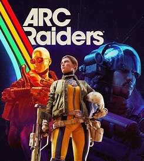

Hierarchy
Making the most important actions obvious before secondary information.
A themed web project focused on game-interface hierarchy, navigation, information design, and presenting a game's systems in a clearer visual structure.

Making the most important actions obvious before secondary information.
Using repeated spacing, labels, panels, and navigation patterns.
Building a visual language that supports a game's world without sacrificing readability.
Breaking larger systems into sections that are faster to scan and understand.